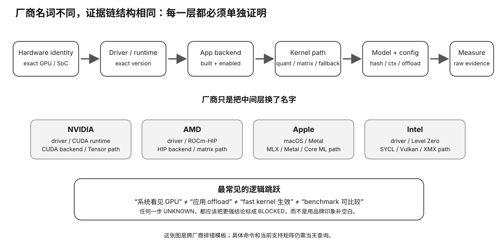

Vendor Capstone · Intel · L0→L2
Intel / SYCL 实战闭环：从 Arc 枚举到可复现 LLM GPU 证据
Intel capstone 的目标是让你摆脱“Arc 能不能跑 LLM”的二元争论，改成精确回答：哪张 exact device、哪条 backend、哪版 driver/runtime、哪个模型/量化能跑，哪里 fallback，真实 PP/TG/质量怎样。
Prerequisite Check
完成 Xe-core/XMX 与 Arc/oneAPI 软件栈课程，能画出 device→driver→runtime→backend→model kernel 的链。
真实问题：为什么“Arc 支持 SYCL”不是应用可用性的充分条件？
SYCL 是编程模型；LLM 应用还必须实际提供并启用对应 backend，编译器/runtime 要支持 exact device，模型量化还要有可用 kernel。任何一层都可能阻断。

1. Intel evidence chain
exact Arc/Xe device → graphics/compute driver → Level Zero / oneAPI runtime → SYCL or other application backend → target model/quant kernel → GPU offload observed → PP/TG + quality → reproducible environment record
2. Device enumeration：先证明 runtime 看到谁
操作系统显示设备只是第一步。下一步用目标 runtime/SYCL/Level Zero 工具列出 device，并记录 PCI identity、driver version、可见 memory 与 capability。多 GPU/iGPU+dGPU 环境还要明确 selector。
3. Application build：最常见的“看起来能跑其实走 CPU”来源
同一个开源项目可能发布 CPU、CUDA、HIP、SYCL、Vulkan 等不同 build。启动时确认 backend 字样、device name、offload count 和 memory allocation。
如果应用不提供明确日志，就用系统监控 + 性能对照作为辅助，但不要只凭 utilization 猜。
4. SYCL 与 Vulkan 两条路径怎样公平比较？
先固定模型、量化、prompt、context、输出长度和 runtime revision。如果只是 backend 不同，其他变量尽量相同。然后分 PP 与 TG，同时做质量/输出一致性检查。
正确结论可能是“当前 build 下 Vulkan 更稳定、SYCL 更快/更慢”，而不是“Vulkan/SYCL 本质谁优”。
5. XMX 使用：三层证据
- Capability：exact GPU 宣称 XMX/相应 numeric capability；
- Kernel：应用/library 有对应 XMX/DPAS path；
- Measurement：固定 workload 下该 path 带来可解释效果。
缺第二层时，第一层只是纸面潜力；缺第三层时，尚未证明对你的 workload 有价值。
Worked Example：Arc 16 GB 能完整 offload，但 TG 仍低
confirm full offload → compare PP vs TG → check VRAM bandwidth / clocks → check quant kernel / XMX path → check CPU sampling/tokenization → inspect PCIe transfers → check power/thermal → compare one variable at a time
若 PP 明显好、TG 弱，可能是 decode/memory/quant path；若两者都弱，可能是 backend/kernel/build；若运行中频繁 host transfer，可能是 memory/offload 配置。
6. Driver regression 与版本冻结
新驱动可能修 bug、加设备支持，也可能改变性能或行为。每份 benchmark 保存 driver/runtime/application commit。升级前有 baseline，升级后同协议复测；若回归，能回滚/定位，而不是把结果归因于“卡变慢了”。
7. Platform variables
Arc 类独显还可能受主板 BIOS、Resizable BAR、PCIe link width、iGPU/dGPU selection、power profile 影响。课程不会宣称某设置对所有 LLM 有固定百分比收益，但要求把关键平台状态记录在 profile。
8. Benchmark + quality
固定 model artifact SHA、quant、runtime/backend build、context、prompt token identity、offload、warmup/repetition。至少记录 PP/TG；改变 backend/quant 时配固定质量 corpus/task。
Why it matters
- Arc 的价格/显存优势只有 software chain 兑现后才有意义。
- SYCL/Vulkan 多 backend 让你练习“精确到路径”的兼容结论。
- 版本冻结是小生态/快速迭代生态中特别重要的可复现技能。
- XMX capability 与 XMX-used 是两个证据等级。
常见误区
- “系统看到 Arc = 应用在 Arc 上跑”——缺 runtime/backend/offload。
- “SYCL 跨平台 = 性能跨平台”——可运行和高效是两件事。
- “XMX 存在 = 量化模型自动用 XMX”——需要具体 kernel。
- “更新驱动一定更快”——必须 regression test。
- “一张 benchmark 图能代表所有 backend”——必须记录 exact software path。
实践路径
作者阶段完成 preflight、evidence schema、benchmark protocol。以后你真正有 Arc 时依次跑 device inventory → tiny model → target model → backend A/B → quality → sustained profile。无卡时用文档/fixture 完成 L0。
排错树
OS device OK?
no → driver/platform
yes → runtime enumerates?
no → oneAPI/Level Zero/device support
yes → app backend active?
no → build/config
yes → full offload?
no → fit/kernel/model support
yes → PP/TG/profile
Retrieval Practice
- 为什么“Arc 支持 SYCL”不是 LLM 应用支持的完整命题？
- 怎样公平比较同一应用的 SYCL 与 Vulkan backend？
- XMX 的 capability/kernel/measurement 三层证据分别是什么？
- 为什么 driver version 必须进入 benchmark record？
- 哪些 platform setting 可能污染 Arc benchmark？
- 完整 offload 后 TG 低，应按什么顺序排查？
Decision Rule
Intel 路径的购买证据必须精确到 device + driver/runtime + application backend + model/quant + measured protocol。品牌级“支持/不支持”结论一律降级为待验证假设。
Transfer
完成四厂商 capstone 后，你应该看到同一个模式：硬件 feature 只是一层；真正可用性来自完整软件链与真实 evidence。以后面对新厂商/新加速器继续套这套链。
Capstone 交付物：把“Arc 能跑”拆成可复查的事实
最终 Packet 至少保存：
- exact device / PCI identity / local memory；
- driver、Level Zero/oneAPI 或其他 runtime identity；
- application build 与实际 backend；
- model artifact、quant、context、prompt identity；
- device enumeration、offload、allocation 的原始证据；
- PP/TG + quality；
- Resizable BAR / PCIe link / power profile 等关键平台状态；
- XMX attribution 的证据等级：capability only、kernel path proven、或 measured benefit。
Worked Example：同一 Arc，SYCL 失败而 Vulkan 成功，应该怎么写？
不要写“Arc 支持 LLM”或“SYCL 不行”。更精确的记录是：
exact device + driver D + application revision R + Vulkan backend + model Q = MEASURED USABLE same device/driver/application + SYCL backend + same model Q = BLOCKED at
这两条记录可以同时为真。它们甚至能帮助你判断未来驱动/application 更新是否只修复了其中一条软件路径。
Acceptance States
| 状态 | 最低要求 |
|---|---|
| BLOCKED | device/runtime/backend/model 任一层不成立 |
| USABLE | 目标模型真实 GPU path 稳定完成 workload |
| MEASURED | 固定协议 PP/TG/quality + environment record |
| REVIEW | 兼容、性能、容量、平台、功耗、价格/TCO 进入人工评审 |
Driver regression A/B
如果升级驱动后性能变化，不要同时更换 application、model artifact 和 backend。保留 baseline，改变一个变量：
same GPU same model artifact same app revision same backend same protocol driver old → driver new
只有这样，回归或改善才有合理 attribution。若不得不同时升级多个组件，结论只能写成“stack changed”，不能精确归因驱动。
No-hardware fallback
没有 Intel GPU 时，选择一张具体 Arc/Xe 设备和一个具体开源 runtime，完成 device→driver/runtime→backend→model-kernel 的证据清单。所有真机字段标 UNVERIFIED。同时设计一个 SYCL/Vulkan A/B protocol，但不填虚构性能数字。
What this capstone does NOT prove
一次 Arc 成功运行不证明 XMX 被使用；XMX 被使用也不证明它是瓶颈或主要收益来源。一次 backend A/B 也不能推广到另一版本、另一 quant 或另一 GPU。Vendor capstone 的目标是精确缩小结论范围，而不是制造品牌结论。
完成证据
完成本课后，保留一份 learner-owned completion artifact，至少包含：
- 用自己的话画出或写出本节最小 mental model，并标出关键变量/资源层；
- 完成本节小实验、worksheet 或无硬件 fallback；有真机时链接 raw Evidence，没有真机时明确标 L0 / DOCUMENTED / DEFERRED-HARDWARE；
- 写一条绑定 Evidence 的 PASS / FAIL / UNKNOWN / BLOCKED 结论，说明它怎样影响本地 LLM 的容量、性能、兼容、成本或风险判断；
- 写一句明确 non-claim：这份证据还不能证明什么。
只写“看完了”或抄规格表不算完成。课程要的是可复查的推理产物，而不是阅读打卡。